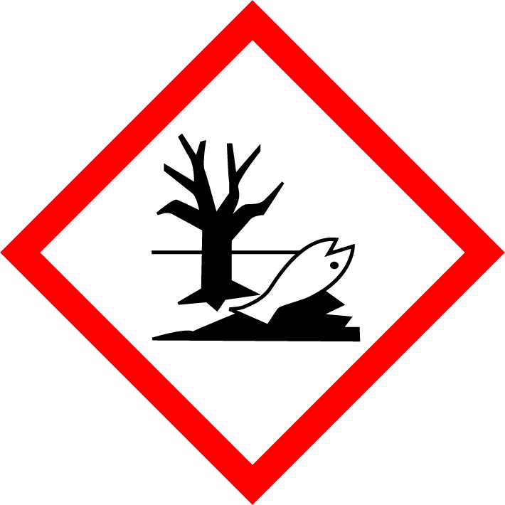

|
Safety Data Sheet according to Regulation (EC) No. 1907/2006 (REACH)
{{ meta.product_name }}
|
|
Revision date: {{ meta.revision_date }} Version: {{ meta.version }} Print date: {{ meta.print_date }}
Safety Data Sheet according to Regulation (EC) No. 1907/2006 (REACH)
SECTION 1: Identification of the substance/mixture and of the company/undertaking
1.1. Product identifier
Trade name/designation:
{{ section_1.product_identifier.trade_name }}
Article No.:
{{ section_1.product_identifier.item_no }}
{{ section_1.product_identifier.item_no }}
UFI:
{{ section_1.product_identifier.ufi }}
{{ section_1.product_identifier.ufi }}
1.2. Relevant identified uses of the substance or mixture and uses advised against
Use of the substance/mixture:
{{ section_1.relevant_uses.product_type | replace('\n', '
') | safe }}
{% if section_1.relevant_uses.lcs or section_1.relevant_uses.su or section_1.relevant_uses.su_fulltext or section_1.relevant_uses.pc1 or section_1.relevant_uses.pc2 %}
') | safe }}
Relevant identified uses:
| Life cycle stage [LCS] | |
| {{ section_1.relevant_uses.lcs.split(':')[0] }}: | {{ section_1.relevant_uses.lcs.split(':')[1] if ':' in section_1.relevant_uses.lcs else section_1.relevant_uses.lcs }} |
| Sector of uses [SU] | |
| {{ section_1.relevant_uses.su }}: | {{ section_1.relevant_uses.su_fulltext }} |
| Product Categories [PC] | |
| {{ section_1.relevant_uses.pc1 }} | |
| {{ section_1.relevant_uses.pc2 }} | |
1.3. Details of the supplier of the safety data sheet
Supplier (manufacturer/importer/only representative/downstream user/distributor):
{{ section_1.supplier_details.name }}
{{ section_1.supplier_details.address }}
{{ section_1.supplier_details.country }}
Telephone: {{ section_1.supplier_details.phone }}
E-mail: {{ section_1.supplier_details.email }}
Website: {{ section_1.supplier_details.website }}
1.4. Emergency telephone number
{{ section_1.emergency_phone.description or 'Vergiftungs-Informations-Zentrale Freiburg' }}, {{ section_1.emergency_phone.number }}
SECTION 2: Hazards identification
2.1. Classification of the substance or mixture
Classification according to Regulation (EC) No 1272/2008 [CLP]
| Hazard classes and hazard categories | Hazard statements | Classification procedure |
|---|---|---|
| {{ item.category }} | H{{ item.code|string|replace('H', '') }}: {{ item.statement }} | {{ item.procedure }} |
2.2. Label elements
{% if section_2.hazard_labelling_html %}
{{ section_2.hazard_labelling_html|safe }}
{% else %}
Labelling according to Regulation (EC) No. 1272/2008 [CLP]
{% if section_2.labelling.pictograms %}
Hazard pictograms:
{% for pictogram in section_2.labelling.pictograms %}
 {% endfor %}
{% endfor %}
{% endif %}
{% if section_2.labelling.signal_word %}
{{ pictogram }}
{% if pictogram == 'GHS01' %}Exploding bomb
{% elif pictogram == 'GHS02' %}Flame
{% elif pictogram == 'GHS03' %}Flame over circle
{% elif pictogram == 'GHS04' %}Gas cylinder
{% elif pictogram == 'GHS05' %}Corrosion
{% elif pictogram == 'GHS06' %}Skull and crossbones
{% elif pictogram == 'GHS07' %}Exclamation mark
{% elif pictogram == 'GHS08' %}Health hazard
{% elif pictogram == 'GHS09' %}Environment
{% endif %}
Signal word: {{ section_2.labelling.signal_word }}
{% endif %}
{% if section_2.labelling.hazard_components %}
Hazard components for labelling:
{{ section_2.labelling.hazard_components }}
{% endif %}
| Hazard statements | |
|---|---|
| H{{ statement.code|string|replace('H', '')|pad(3, '0', true) }} | {{ statement.text }} |
| Precautionary statements Prevention | |
|---|---|
| {{ item.code }} | {{ item.text }} |
| Precautionary statements Response | |
|---|---|
| {{ item.code }} | {{ item.text }} |
| Precautionary statements Storage & Disposal | |
|---|---|
| {{ item.code }} | {{ item.text }} |
| {{ item.code }} | {{ item.text }} |
2.3. Other hazards
Adverse physicochemical effects:
{{ section_2.other_hazards.physicochemical | replace('\n', '
') | safe | default('No data available.', true) }}
{{ section_2.other_hazards.physicochemical | replace('\n', '
') | safe | default('No data available.', true) }}
Adverse human health effects and symptoms:
{{ section_2.other_hazards.health | replace('\n', '
') | safe | default('This product does not contain any substances with endocrine disrupting properties in humans.', true) }}
{{ section_2.other_hazards.health | replace('\n', '
') | safe | default('This product does not contain any substances with endocrine disrupting properties in humans.', true) }}
SECTION 3: Composition/information on ingredients
3.2. Mixtures
Hazardous ingredients / Hazardous impurities / Stabilisers:
| Product identifiers | Substance name Classification according to Regulation (EC) No 1272/2008 [CLP] | Concentration |
|---|---|---|
|
{% if component.cas %}CAS No.: {{ component.cas }} {% endif %} {% if component.ec %}EC No.: {{ component.ec }} {% endif %} {% if component.index_no %}Index No.: {{ component.index_no }} {% endif %} {% if component.reach_no %}REACH No.: {{ component.reach_no }}{% endif %} |
{{ component.name }}
{% if component.workplace_limit %}
{{ component.workplace_limit }}
{% endif %}
{% for class in component.classification %}
{{ class }}
{% endfor %}
{% if component.pictograms %}
{% for pic in component.pictograms %}
{% endif %}
{% if component.ate_values %}
 {% endfor %}
{% if component.signal_word %} {{ component.signal_word }}{% endif %}
{% endfor %}
{% if component.signal_word %} {{ component.signal_word }}{% endif %}
Acute Toxicity Estimate
{% endif %}
{% for ate in component.ate_values %} {% if ate is mapping %}{{ ate.label|safe }} {{ ate.value|safe }} {{ ate.unit|safe }}{% else %}{{ ate|safe }}{% endif %} {% endfor %} |
{{ component.concentration }} |
Full text of H- and EUH-phrases: see section 16.
SECTION 4: First aid measures
4.1. Description of first aid measures
General information:
{{ section_4.description.general | replace('\n', '
') | safe | default('No data available.', true) }}
') | safe | default('No data available.', true) }}
Following inhalation:
{{ section_4.description.inhalation | replace('\n', '
') | safe | default('No data available.', true) }}
') | safe | default('No data available.', true) }}
In case of skin contact:
{{ section_4.description.skin | replace('\n', '
') | safe | default('No data available.', true) }}
') | safe | default('No data available.', true) }}
After eye contact:
{{ section_4.description.eye | replace('\n', '
') | safe | default('No data available.', true) }}
') | safe | default('No data available.', true) }}
Following ingestion:
{{ section_4.description.ingestion | replace('\n', '
') | safe | default('No data available.', true) }}
') | safe | default('No data available.', true) }}
Self-protection of the first aider:
{{ section_4.description.self_protection | replace('\n', '
') | safe | default('No data available.', true) }}
') | safe | default('No data available.', true) }}
4.2. Most important symptoms and effects, both acute and delayed
{{ section_4.symptoms | replace('\n', '
') | safe | default('No data available.', true) }}
') | safe | default('No data available.', true) }}
4.3. Indication of any immediate medical attention and special treatment needed
{{ section_4.treatment | replace('\n', '
') | safe | default('No data available.', true) }}
') | safe | default('No data available.', true) }}
SECTION 5: Firefighting measures
5.1. Extinguishing media
Suitable extinguishing media:
{{ section_5.suitable_media | replace('\n', '
') | safe }}
{{ section_5.suitable_media | replace('\n', '
') | safe }}
Unsuitable extinguishing media:
{{ section_5.unsuitable_media | replace('\n', '
') | safe }}
{{ section_5.unsuitable_media | replace('\n', '
') | safe }}
5.2. Special hazards arising from the substance or mixture
{{ section_5.special_hazards | replace('\n', '
') | safe }}
') | safe }}
Hazardous combustion products:
{{ section_5.combustion_products | replace('\n', '
') | safe }}
{{ section_5.combustion_products | replace('\n', '
') | safe }}
5.3. Advice for firefighters
{{ section_5.firefighter_advice | replace('\n', '
') | safe }}
') | safe }}
5.4. Additional information
{{ section_5.additional_info | replace('\n', '
') | safe }}
') | safe }}
SECTION 6: Accidental release measures
6.1. Personal precautions, protective equipment and emergency procedures
6.1.1. For non-emergency personnel
Personal precautions:
{{ section_6.personal_precautions | replace('\n', '
') | safe }}
{{ section_6.personal_precautions | replace('\n', '
') | safe }}
Protective equipment:
{{ section_6.protective_equipment | replace('\n', '
') | safe }}
{{ section_6.protective_equipment | replace('\n', '
') | safe }}
6.1.2. For emergency responders
{{ section_6.emergency_responders | replace('\n', '
') | safe }}
') | safe }}
6.2. Environmental precautions
{{ section_6.environmental_precautions | replace('\n', '
') | safe }}
') | safe }}
6.3. Methods and material for containment and cleaning up
For containment:
{{ section_6.containment | replace('\n', '
') | safe }}
{{ section_6.containment | replace('\n', '
') | safe }}
For cleaning up:
{{ section_6.cleaning | replace('\n', '
') | safe }}
{{ section_6.cleaning | replace('\n', '
') | safe }}
6.4. Reference to other sections
{{ section_6.other_sections }}
SECTION 7: Handling and storage
7.1. Precautions for safe handling
Protective measures
Advices on safe handling:
{{ section_7.safe_handling | replace('\n', '
') | safe }}
') | safe }}
Fire prevent measures:
{{ section_7.fire_prevention | replace('\n', '
') | safe }}
') | safe }}
Advices on general occupational hygiene
{{ section_7.occupational_hygiene | replace('\n', '
') | safe }}
') | safe }}
7.2. Conditions for safe storage, including any incompatibilities
Technical measures and storage conditions:
{{ section_7.storage_conditions | replace('\n', '
') | safe }}
') | safe }}
Requirements for storage rooms and vessels:
{{ section_7.storage_rooms | replace('\n', '
') | safe }}
') | safe }}
Hints on storage assembly:
{{ section_7.storage_assembly | replace('\n', '
') | safe }}
') | safe }}
Storage class (TRGS 510, Germany): {{ section_7.storage_class or section_15.storage_class or '3 – Flammable liquids' }}
{% if section_7.further_storage_conditions %}
Further information on storage conditions:
{{ section_7.further_storage_conditions | replace('\n', '
') | safe }}
{% endif %}
') | safe }}
7.3. Specific end use(s)
{{ section_7.specific_end_use | replace('\n', '
') | safe }}
') | safe }}
SECTION 8: Exposure controls/personal protection
8.1. Control parameters
8.1.1. Occupational exposure limit values
| Limit value type (country of origin) |
Substance name | ① Long-term occupational exposure limit value ② Short-term occupational exposure limit value ③ Instantaneous value ④ Monitoring and observation processes ⑤ Remark |
|---|---|---|
| {{ limit.limit_type }} | {{ limit.substance|safe }}{% if limit.CAS_number %} CAS No.: {{ limit.CAS_number|safe }}{% endif %}{% if limit.ec %} EC No.: {{ limit.ec|safe }}{% endif %} |
{% if limit.formatted_values %}
{{ limit.formatted_values|safe }}
{% else %}
{% if limit.time_weight_average %}① {{ limit.time_weight_average }} {{ limit.limit_unit }} {% endif %} {% if limit.short_term_limit %}② {{ limit.short_term_limit }} {{ limit.limit_unit }} {% endif %} {% if limit.regulatory_reference %}⑤ {{ limit.regulatory_reference }}{% endif %} {% endif %} |
8.1.2. Biological limit values
{% if section_8.biological_limit_values and section_8.biological_limit_values is iterable %}
| Limit value type (country of origin) |
Substance name | Limit value | ① Parameter ② Test material ③ Time of sampling ④ Remark |
|---|---|---|---|
| {{ blv.limit_type | default('') }} | {{ blv.substance | default('') }}{% if blv.CAS_number %} CAS No.: {{ blv.CAS_number }}{% endif %}{% if blv.EC_number %} EC No.: {{ blv.EC_number }}{% endif %} |
{{ blv.limit_value | default('') }} |
{% if blv.parameter %}① {{ blv.parameter }} {% endif %} {% if blv.test_material %}② {{ blv.test_material }} {% endif %} {% if blv.sampling_time %}③ {{ blv.sampling_time }} {% endif %} {% if blv.remark %}④ {{ blv.remark }}{% endif %} |
{{ section_8.biological_limit_values | default('No data available', true) }}
{% endif %}
8.1.3. DNEL-/PNEC-values
{% if section_8.dnel_pnec_values and section_8.dnel_pnec_values is iterable %}
| Substance name | DNEL value / PNEC Value | ① DNEL type / ① PNEC type ② Exposure route |
|---|---|---|
| {{ dnel.substance | default('') }}{% if dnel.CAS_number %} CAS No.: {{ dnel.CAS_number }}{% endif %}{% if dnel.EC_number %} EC No.: {{ dnel.EC_number }}{% endif %} |
{{ dnel.value | default('') }} |
{% if dnel.type %}① {{ dnel.type }} {% endif %} {% if dnel.exposure_route %}② {{ dnel.exposure_route }}{% endif %} |
{{ section_8.dnel_pnec_values | default('No data available', true) }}
{% endif %}
8.2. Exposure controls
8.2.1. Appropriate engineering controls
{{ section_8.engineering_controls | replace('\n', '
') | safe | default('Provide adequate ventilation.', true) }}
') | safe | default('Provide adequate ventilation.', true) }}
8.2.2. Personal protection equipment
{% if section_8.ppe_icons %}
{% for icon in section_8.ppe_icons %}
 {% endfor %}
{% endfor %}
{% endif %}
Eye/face protection:
{{ section_8.eye_protection | replace('\n', '
') | safe }}
') | safe }}
Skin protection:
{{ section_8.skin_protection | replace('\n', '
') | safe }}
') | safe }}
Respiratory protection:
{{ section_8.respiratory_protection | replace('\n', '
') | safe }}
{% if section_8.other_protection %}
') | safe }}
Other protection measures:
{{ section_8.other_protection | replace('\n', '
') | safe }}
{% elif section_8.occupational_hygiene %}
') | safe }}
Other protection measures:
{{ section_8.occupational_hygiene | replace('\n', '
') | safe }}
{% endif %}
') | safe }}
8.2.3. Environmental exposure controls
{{ section_8.environmental_exposure | replace('\n', '
') | safe }}
') | safe }}
SECTION 9: Physical and chemical properties
9.1. Information on basic physical and chemical properties
Appearance
{{ section_9.appearance|safe }}
Safety relevant basis data
| Parameter | Value | at °C | ① Method ② Remark |
|---|---|---|---|
| {{ item.parameter|safe }} | {{ item.value|safe }} | {{ item.temperature|safe }} | {{ item.method|safe }} |
9.2. Other information
{{ section_9.other_info | replace('\n', '
') | safe | default('No data available.', true) }}
') | safe | default('No data available.', true) }}
SECTION 10: Stability and reactivity
10.1. Reactivity
{{ section_10.reactivity | replace('\n', '
') | safe }}
') | safe }}
10.2. Chemical stability
{{ section_10.chemical_stability | replace('\n', '
') | safe }}
') | safe }}
10.3. Possibility of hazardous reactions
{{ section_10.hazardous_reactions | replace('\n', '
') | safe }}
') | safe }}
10.4. Conditions to avoid
{{ section_10.conditions_to_avoid | replace('\n', '
') | safe }}
') | safe }}
10.5. Incompatible materials
{{ section_10.incompatible_materials | replace('\n', '
') | safe }}
') | safe }}
10.6. Hazardous decomposition products
{{ section_10.hazardous_decomposition | replace('\n', '
') | safe }}
') | safe }}
SECTION 11: Toxicological information
11.1. Information on hazard classes as defined in Regulation (EC) No 1272/2008
{% for component in section_3.mixture_components %}
| {{ component.name }} CAS No.: {{ component.cas }} EC No.: {{ component.ec }} | |
| {% if info is mapping %}{{ info.label|safe }}: {{ info.value|safe }} {{ info.unit|safe }}{% else %}{{ info|safe }}{% endif %} |
Acute toxicity:
{{ section_11.acute_toxicity | replace('\n', '
') | safe }}
') | safe }}
Skin corrosion/irritation:
{{ section_11.skin_corrosion | replace('\n', '
') | safe }}
') | safe }}
Serious eye damage/irritation:
{{ section_11.eye_damage | replace('\n', '
') | safe }}
') | safe }}
Respiratory or skin sensitisation:
{{ section_11.sensitisation | replace('\n', '
') | safe }}
') | safe }}
Germ cell mutagenicity:
{{ section_11.mutagenicity | replace('\n', '
') | safe }}
') | safe }}
Carcinogenicity:
{{ section_11.carcinogenicity | replace('\n', '
') | safe }}
') | safe }}
Reproductive toxicity:
{{ section_11.reproductive_toxicity | replace('\n', '
') | safe }}
') | safe }}
STOT-single exposure:
{{ section_11.stot_single | replace('\n', '
') | safe }}
') | safe }}
STOT-repeated exposure:
{{ section_11.stot_repeated | replace('\n', '
') | safe }}
') | safe }}
Aspiration hazard:
{{ section_11.aspiration_hazard | replace('\n', '
') | safe }}
') | safe }}
11.2. Information on other hazards
{{ section_11.other_hazards | replace('\n', '
') | safe | default('No data available.', true) }}
') | safe | default('No data available.', true) }}
SECTION 12: Ecological information
12.1. Toxicity
{% for component in section_12.ecotox_components %}
{% if component.aquatic_toxicity_entries %}
| {{ component.generic_name }} CAS No.: {{ component.cas_no }}{% if component.ec_no %} EC No.: {{ component.ec_no }}{% endif %} | |
| {{ entry.effect_dose|safe }}: {{ entry.value|safe }} {{ entry.unit|safe }} {{ entry.exposure_time|safe }} ({{ entry.species|safe }}) {{ entry.method|safe }} |
12.2. Persistence and degradability
{% set has_12_2 = false %}
{% for component in section_12.ecotox_components | default([]) %}
{% if component.biodegradation %}
{% set has_12_2 = true %}
| {{ component.generic_name }} CAS No.: {{ component.cas_no }}{% if component.ec_no %} EC No.: {{ component.ec_no }}{% endif %} |
| Biodegradation: {{ component.biodegradation|safe }} |
{{ section_12.persistence | replace('\n', '
') | safe or section_12.persistence_text | replace('\n', '
') | safe or 'No data available.' }}
{% endif %}
') | safe or section_12.persistence_text | replace('\n', '
') | safe or 'No data available.' }}
12.3. Bioaccumulative potential
{% set has_12_3 = false %}
{% for component in section_12.ecotox_components | default([]) %}
{% if component.log_kow or component.bcf %}
{% set has_12_3 = true %}
| {{ component.generic_name }} CAS No.: {{ component.cas_no }}{% if component.ec_no %} EC No.: {{ component.ec_no }}{% endif %} |
| Log KOW: {{ component.log_kow|safe }} |
| Bioconcentration factor (BCF): {{ component.bcf|safe }} |
{{ section_12.bioaccumulation | replace('\n', '
') | safe or section_12.bioaccumulation_text | replace('\n', '
') | safe or 'No data available.' }}
{% endif %}
') | safe or section_12.bioaccumulation_text | replace('\n', '
') | safe or 'No data available.' }}
12.4. Mobility in soil
{{ section_12.mobility_info | replace('\n', '
') | safe | default('No data available.', true) }}
') | safe | default('No data available.', true) }}
12.5. Results of PBT and vPvB assessment
{% set has_12_5 = false %}
{% for component in section_12.ecotox_components | default([]) %}
{% if component.pbt_result %}
{% set has_12_5 = true %}
| {{ component.generic_name }} CAS No.: {{ component.cas_no }}{% if component.ec_no %} EC No.: {{ component.ec_no }}{% endif %} |
| Results of PBT and vPvB assessment: {{ component.pbt_result|safe }} |
{{ section_12.pbt_result | replace('\n', '
') | safe or section_12.pbt_text | replace('\n', '
') | safe or 'No data available.' }}
{% endif %}
') | safe or section_12.pbt_text | replace('\n', '
') | safe or 'No data available.' }}
12.6. Endocrine disrupting properties
{{ section_12.endocrine_disrupting_info | replace('\n', '
') | safe | default('No data available.', true) }}
') | safe | default('No data available.', true) }}
12.7. Other adverse effects
{{ section_12.other_adverse_effects_info | replace('\n', '
') | safe | default('No data available.', true) }}
') | safe | default('No data available.', true) }}
SECTION 13: Disposal considerations
13.1. Waste treatment methods
{{ section_13.eu_requirements | replace(' *: Evidence for disposal must be provided.', '') | replace('\n', '
') | safe | default('Dispose of waste according to applicable legislation.', true) }}
') | safe | default('Dispose of waste according to applicable legislation.', true) }}
13.1.1. Product/Packaging disposal
Waste codes/waste designations according to EWC/AVV
{% if section_13.ewl_data %}
Waste code product
{{ section_13.ewl_data[0].code }} {% if section_13.ewl_data[0].hazardous == 'true' %}*{% endif %}
{{ section_13.ewl_data[0].description }}
*: Evidence for disposal must be provided.
Waste code packaging
{% if section_13.ewl_data|length > 1 %}
{{ section_13.ewl_data[1].code }}
{{ section_13.ewl_data[1].description }}
Waste code product
{{ section_13.waste_code_product }}
{{ section_13.waste_code_product_desc }}
Waste treatment options
Appropriate disposal / Product:
Consult the appropriate local waste disposal expert about waste disposal.
Appropriate disposal / Package:
Completely emptied packages can be recycled.
SECTION 14: Transport information
| Land transport (ADR/RID) | Inland waterway craft (ADN) | Sea transport (IMDG) | Air transport (ICAO-TI / IATA-DGR) |
|---|---|---|---|
| 14.1. UN number or ID number | |||
| {{ section_14.land.un_number }} | {{ section_14.inland.un_number }} | {{ section_14.sea.un_number }} | {{ section_14.air.un_number }} |
| 14.2. UN proper shipping name | |||
| {{ section_14.land.shipping_name }} | {{ section_14.inland.shipping_name }} | {{ section_14.sea.shipping_name }} | {{ section_14.air.shipping_name }} |
| 14.3. Transport hazard class(es) | |||
|
{% if section_14.transport_icons and section_14.land.transport_class %}
{% for icon in section_14.transport_icons %} {% elif section_14.land.transport_class %} {% endif %} {{ section_14.land.transport_class }}
|
{% if section_14.transport_icons and section_14.inland.transport_class %}
{% for icon in section_14.transport_icons %} {% elif section_14.inland.transport_class %} {% endif %} {{ section_14.inland.transport_class }}
|
{% if section_14.transport_icons and section_14.sea.transport_class %}
{% for icon in section_14.transport_icons %} {% elif section_14.sea.transport_class %} {% endif %} {{ section_14.sea.transport_class }}
|
{% if section_14.transport_icons and section_14.air.transport_class %}
{% for icon in section_14.transport_icons %} {% elif section_14.air.transport_class %} {% endif %} {{ section_14.air.transport_class }}
|
| 14.4. Packing group | |||
| {{ section_14.land.packing_group }} | {{ section_14.inland.packing_group }} | {{ section_14.sea.packing_group }} | {{ section_14.air.packing_group }} |
| 14.5. Environmental hazards | |||
|
{% if 'yes' in section_14.land.environmental_hazards|lower or 'ja' in section_14.land.environmental_hazards|lower %}  {% endif %} {{ section_14.land.environmental_hazards }} |
{% if 'yes' in section_14.inland.environmental_hazards|lower or 'ja' in section_14.inland.environmental_hazards|lower %} {% endif %} {{ section_14.inland.environmental_hazards }} |
{% if 'yes' in section_14.sea.environmental_hazards|lower or 'ja' in section_14.sea.environmental_hazards|lower or 'pollutant' in section_14.sea.environmental_hazards|lower %} {% endif %} {{ section_14.sea.environmental_hazards }} |
{% if 'yes' in section_14.air.environmental_hazards|lower or 'ja' in section_14.air.environmental_hazards|lower %} {% endif %} {{ section_14.air.environmental_hazards }} |
| 14.6. Special precautions for user | |||
|
{% if section_14.land.special_provisions %}Special Provisions: {{ section_14.land.special_provisions }} {% endif %} {% if section_14.land.limited_quantity %}Limited quantity (LQ): {{ section_14.land.limited_quantity }} {% endif %} {% if section_14.land.excepted_quantities %}Excepted Quantities (EQ): {{ section_14.land.excepted_quantities }} {% endif %} {% if section_14.land.hazard_id %}Hazard identification number (Kemler No.): {{ section_14.land.hazard_id }} {% endif %} {% if section_14.land.classification_code %}Classification code: {{ section_14.land.classification_code }} {% endif %} {% if section_14.land.tunnel_code %}Tunnel restriction code: {{ section_14.land.tunnel_code }}{% endif %} |
{% if section_14.inland.special_provisions %}Special Provisions: {{ section_14.inland.special_provisions }} {% endif %} {% if section_14.inland.limited_quantity %}Limited quantity (LQ): {{ section_14.inland.limited_quantity }} {% endif %} {% if section_14.inland.excepted_quantities %}Excepted Quantities (EQ): {{ section_14.inland.excepted_quantities }} {% endif %} {% if section_14.inland.classification_code %}Classification code: {{ section_14.inland.classification_code }}{% endif %} |
{% if section_14.sea.special_provisions %}Special Provisions: {{ section_14.sea.special_provisions }} {% endif %} {% if section_14.sea.limited_quantity %}Limited quantity (LQ): {{ section_14.sea.limited_quantity }} {% endif %} {% if section_14.sea.excepted_quantities %}Excepted Quantities (EQ): {{ section_14.sea.excepted_quantities }} {% endif %} {% if section_14.sea.ems_code %}EmS-No.: {{ section_14.sea.ems_code }} {% endif %} |
{% if section_14.air.special_provisions %}Special Provisions: {{ section_14.air.special_provisions }} {% endif %} {% if section_14.air.limited_quantity %}Limited quantity (LQ): {{ section_14.air.limited_quantity }} {% endif %} {% if section_14.air.excepted_quantities %}Excepted Quantities (EQ): {{ section_14.air.excepted_quantities }}{% endif %} |
14.7. Maritime transport in bulk according to IMO instruments
{{ section_14.bulk_transport | default('No transport as bulk according to IBC Code.') }}
SECTION 15: Regulatory information
15.1. Safety, health and environmental regulations/legislation specific for the substance or mixture
15.1.1. EU legislation
{{ section_15.eu_legislation | replace('\n', '
') | safe | default('No data available.', true) }}
') | safe | default('No data available.', true) }}
15.1.2. National regulations
[{{ meta.country }}] National regulations
{% if section_15.restrictions %}
Restrictions of occupation
{{ section_15.restrictions | replace('\n', '
') | safe }}
{% endif %}
{% if section_15.stoerfallverordnung %}
') | safe }}
Störfallverordnung (12. BImSchV)
{{ section_15.stoerfallverordnung | safe }}
{% endif %}
{% if section_15.betriebssicherheitsverordnung %}
Betriebssicherheitsverordnung (BetrSichV)
{{ section_15.betriebssicherheitsverordnung | replace('\n', '
') | safe }}
{% endif %}
') | safe }}
Water hazard class
WGK:
{{ section_15.wgk }}
{% if section_15.additional_info %}
Other regulations
{% for info in section_15.additional_info %}
{{ info }}
{% endfor %}
{% endif %}
{% endfor %}
15.2. Chemical Safety Assessment
{{ section_15.chemical_safety_assessment | replace('\n', '
') | safe | default('No data available.', true) }}
') | safe | default('No data available.', true) }}
SECTION 16: Other information
16.1. Indication of changes
| {{ change.section }} | {{ change.description }} |
| {{ change.description | default(change) }} | |
| No data available. | |
16.2. Abbreviations and acronyms
| {{ abbr.short }} | {{ abbr.long }} |
| No data available. |
16.3. Key literature references and sources for data
{{ other_information.literature_references | default('No data available.', true) }}
{% if other_information.literature_references_table %}
| Substance name | Type | source of supply |
|---|---|---|
| {{ lit.substance | safe }} | {{ lit.type | safe }} | {{ lit.source | safe }} |
16.4. Classification for mixtures and used evaluation method according to regulation (EC) No 1272/2008 [CLP]
| Hazard classes and hazard categories | Hazard statements | Classification procedure |
|---|---|---|
| {{ item.clp_hazard_class_category }} | H{{ item.clp_hazard_statement_code }}: {{ item.clp_hazard_statement_text }} | {{ item.clp_classification_procedure }} |
16.5. List of relevant hazard statements and/or precautionary statements from sections 2 to 15
| Hazard statements | |
|---|---|
| H{{ item.clp_hazard_statement_code }} | {{ item.clp_hazard_statement_text }} |
16.6. Training advice
{{ other_information.training_advice | replace('\n', '
') | safe | default('No data available.', true) }}
') | safe | default('No data available.', true) }}
16.7. Additional information
{% for line in other_information.additional_info_lines %}
{% if not '* Data changed' in line %}
{{ line }}
{% endif %}
{% else %}
No data available.
{% endfor %}